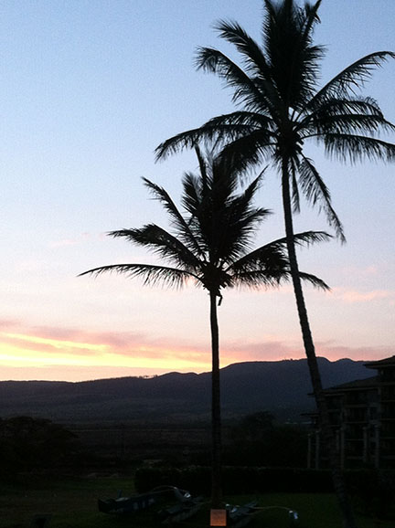
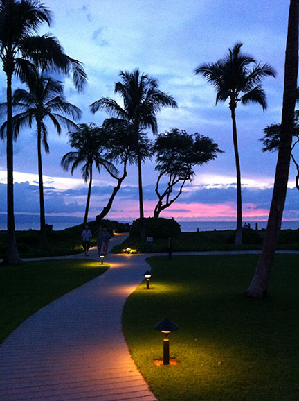

Ever since I travelled to Hawaii back in April 2013 I have a dream, and that is to live there someday. It is everything you could wish for from a dream paradise including perfect temperatures all year round and spectacular scenery that you can't seem to get tired of. Everywhere you go there's a new adventure, in the sea or on land. We snorkeled in an old volcano crater where there were fish of every colour of the rainbow then after that we climbed the jungle mountains to find water falls that you had to swim to get to.
I couldn't believe how every single night had the most beautiful sunset I had ever seen. Every single night I went to bed unbelievably happy and excited for the next day. I'm sure there are other places in the world that are as beautiful and incredible as Hawaii but none would have the same ease to live in for a couple of different reasons.
Now if the fact that there are active volcanoes on the island and there have been many reported shark attacks bothers you then Hawaii may not be the best place for you. For me I know that the volcanoes are very unlikely to erupt and I am not planning on living on the big island either, which is where the active volcanoes are. As for the sharks however, a little danger is necessary if you are going to live in the most beautiful place on earth.
